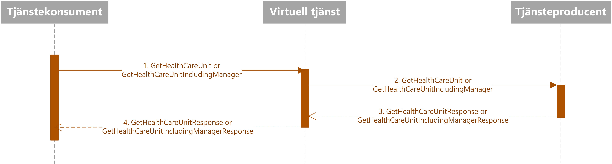
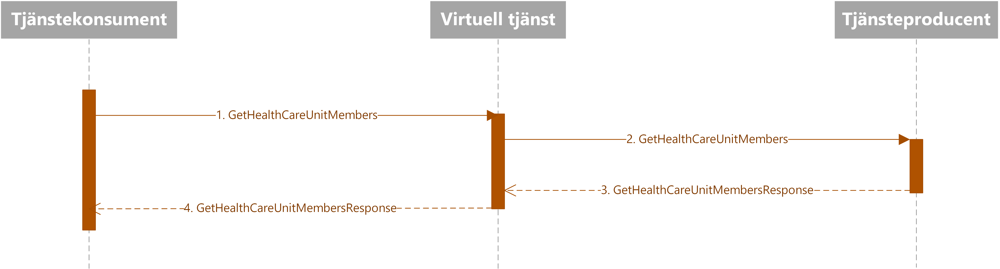
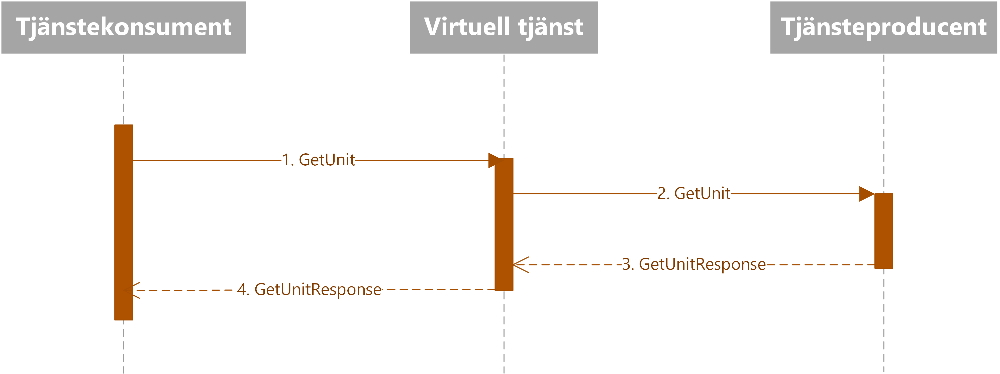
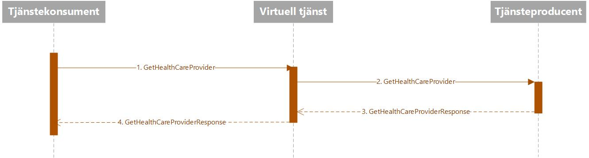

infrastructure: directory: organization
5 - draft
infrastructure: directory: organization - Local Development build (v5) built by the FHIR (HL7® FHIR® Standard) Build Tools. See the Directory of published versions
Kataloginformation om organisation och enheter/funktioner kan användas för många olika syften och behovet av information ser då också olika ut. Principen för informationshämtningen är dock densamma och kan beskrivas med samma flöde. Ett stort och viktigt användningsområde för katalogtjänster inom vård och omsorg är vårdsökningar där en användare på en webbsida söker efter till exempel en sjukgymnastikmottagning i Oxelösund eller information om vart de ska vända sig med akut halsfluss när klockan är sju på en fredag kväll. Sökalgoritmerna skapas i detta fall av tjänstekonsumentens tjänst (webbsidan), men tjänsteproducentens tjänst bidrar med information om vilka vårdmottagningar som finns, vilken typ av verksamhet de bedriver samt öppettider och annan kontaktinformation. Andra exempel på befintliga användningar är presentation av olika typer av förvalslistor i gränssnitt riktade mot vårdpersonal (t.ex. vilka vårdenheter som ingår i en vårdgivares verksamhet eller vilka mottagningar som tillhör en klinik) eller detaljerad kontaktinformation till en enhet, funktion eller person. Informationen skulle också kunna sägas stödja en behörighetshantering baserad personliga/anställningsrelaterade egenskaper, då tjänstekontrakten också levererar behörighetsgrundande information i form av t.ex. tillhörighet till legitimerad yrkesgrupp och befattning.
Flödet för en typisk användning är normalt att en tjänstekonsument hämtar information om en vårdenhet via en virtuell tjänst som i sin tur anropar tjänsteproducenten samt returnerar svaret från producenten tillbaka till den anropande konsumenten. Se Sekvensdiagram nedan.
Se Sekvensdiagram nedan.

Flödet för en typisk användning är normalt att en tjänstekonsument hämtar information om en vårdgivares alla vårdenheter via en virtuell tjänst som i sin tur anropar tjänsteproducenten samt returnerar svaret från producenten tillbaka till den anropande konsumenten. Se Sekvensdiagram nedan.
Se Sekvensdiagram nedan.
Flödet för en typisk användning är normalt att en tjänstekonsument hämtar information om en vårdenhets ingående enheter via en virtuell tjänst som i sin tur anropar tjänsteproducenten samt returnerar svaret från producenten tillbaka till den anropande konsumenten. Se Sekvensdiagram nedan.
Se Sekvensdiagram nedan.

Flödet för en typisk användning är normalt att en tjänstekonsument hämtar information om en organisatorisk enhet via en virtuell tjänst som i sin tur anropar tjänsteproducenten samt returnerar svaret från producenten tillbaka till den anropande konsumenten. Se Sekvensdiagram nedan.
Se Sekvensdiagram nedan.

Flödet för en typisk användning är normalt att en tjänstekonsument hämtar information om en vårdgivare via en virtuell tjänst som i sin tur anropar tjänsteproducenten samt returnerar svaret från producenten tillbaka till den anropande konsumenten. Se Sekvensdiagram nedan.
Se Sekvensdiagram nedan.

Följande tabell specificerar vilka kontrakt som är obligatoriska att realisera för respektive flöde.
| Tjänstekontrakt | Flöde 1 | Flöde 2 | Flöde 3 | Flöde 4 | Flöde 5 |
|---|---|---|---|---|---|
| GetHealthCareUnit (se avsnitt 6.1) | X | ||||
| GetHealthCareUnitList (se avsnitt 6.2) | X | ||||
| GetHealthCareUnitMembers (se avsnitt 6.3) | X | ||||
| GetUnit (se avsnitt 6.4) | X | ||||
| GetHealthCareProvider (se avsnitt 6.8) | X |
Tjänstedomänen tillämpar verksamhetsbaserad adressering. Som logisk adress används Inera AB:s HSA-id för Katalogtjänst HSA.
För närvarande är aggregering eller engagemangsindex ej aktuellt, då endast en tjänsteproducent är ansluten till tjänstedomänen. I samband med att fler tjänsteproducenter ansluter till tjänstedomänen behöver sökningen från anropande tjänstekonsument realiseras mot flera tjänsteproducenter. Vilken alternativ lösning som ska tillämpas när denna situation uppstår är ännu inte beslutat, se AB-2.3 [R1].